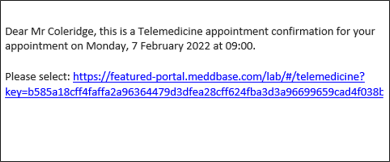
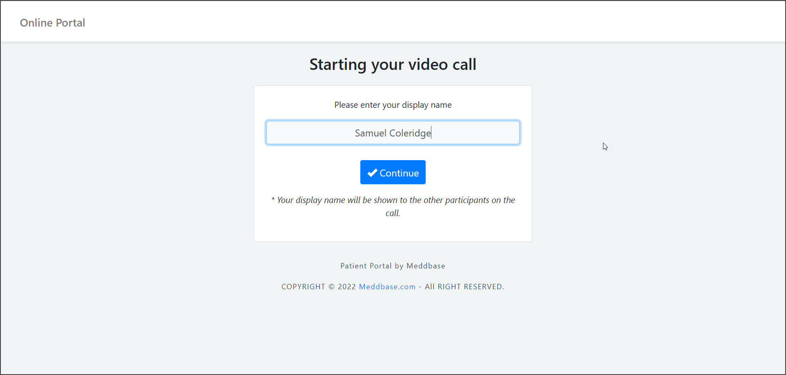
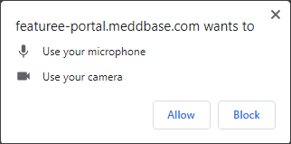
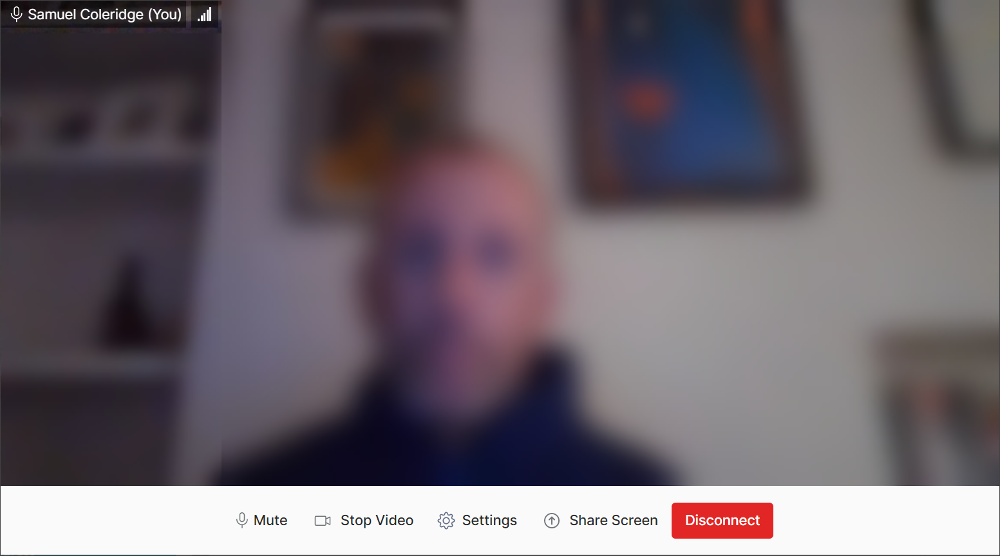
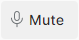
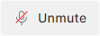

- Update your Display Name as required
- Click on Continue



Meddbase enables patients to join telemedicine appointments in their browser using a unique link in a telemedicine appointment invitation email or SMS.
This article outlines:
WARNING
These are generic guidelines and we recommend that each provider creates their own joining instructions and guidelines that fit their requirements for their patients.
Although not exhaustive, the following is a useful check-list for patients to make sure they have a smooth telemedicine appointment:
If you are the patient who is an appointment attendee, you can do as follows:



You are now part of the telemedicine appointment.

We have deliberately blurred pictures of attendees.
When the clinician joins the telemedicine appointment, they will appear in the main part of the screen, with a small panel in the top-right indicating how you appear on screen to them.
 | When you want to leave the telemedicine call, simply select Disconnect from within the browser window. |
Within the telemedicine appointment, there is a range of features available to help you manage the call. These are explained below.
 | You can select the Mute button at the bottom of the screen to mute your microphone. |
 | Having muted, you can then select the Unmute button to re-activate your microphone for this call. |
 | You can select the Stop Video button at the bottom of the screen to switch off your video. |
| Having switched off your video, you can then select the Start Video button to re-activate your video for this telemedicine call. |
You can select the Share Screen at the bottom of the screen to share either an Entire screen, Window or browser tab. | |
 | Having made a sharing selection, you can then use the Stop Sharing option to stop sharing your screen. |
 | By selecting Settings you can access Audio and Video Settings. |
From here, you can make selections of Video Input, Audio Input and Audio Output for your Video, Microphone and Speakers. You can also blur the background of your video by selecting the Background Blur checkbox

Then select Done when complete.